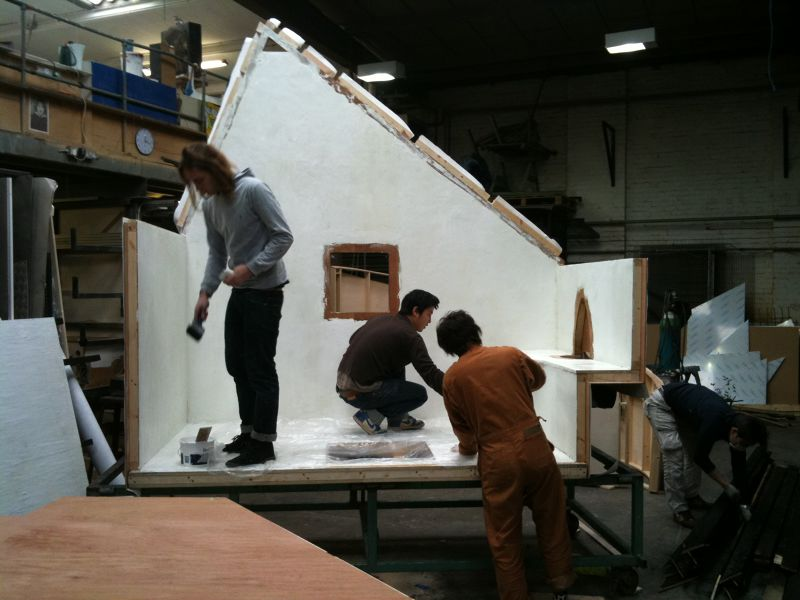
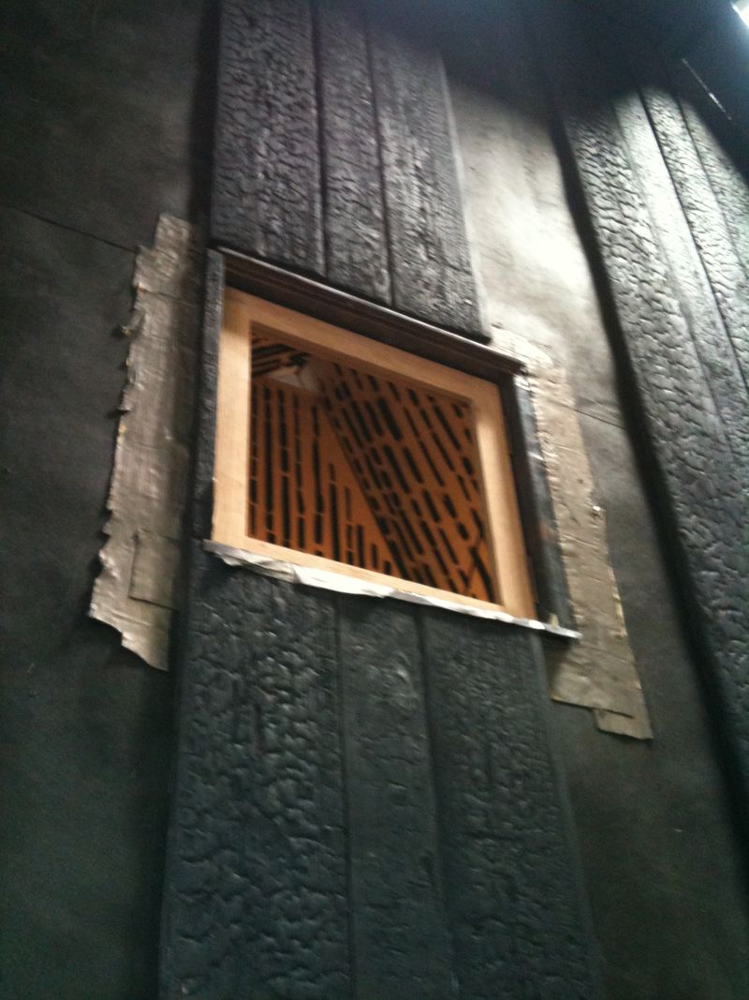
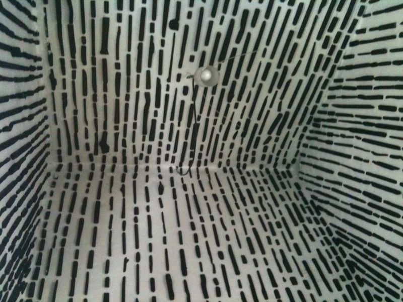
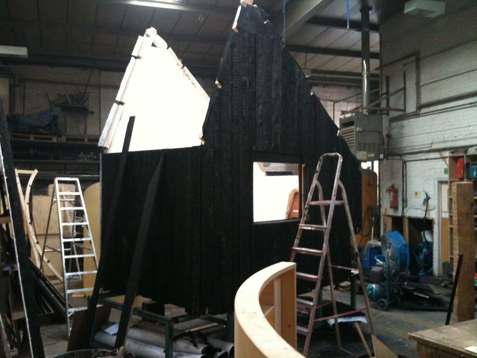
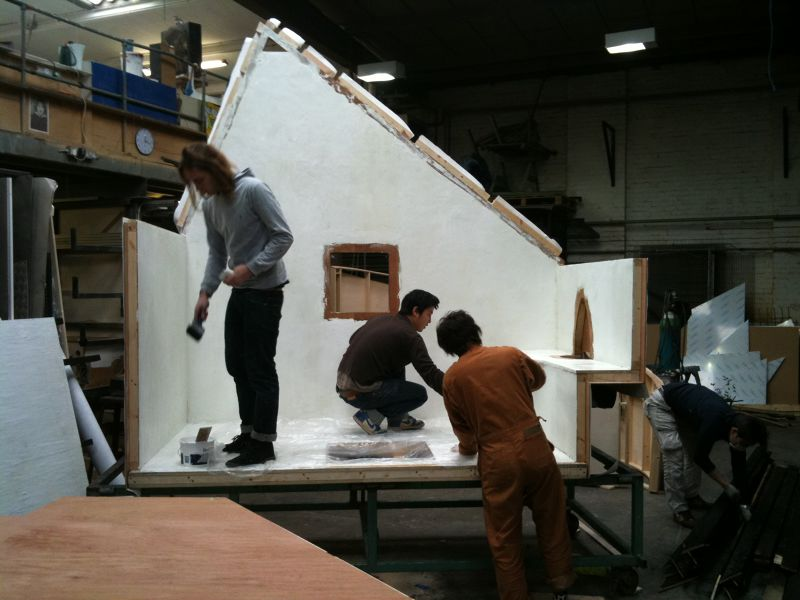
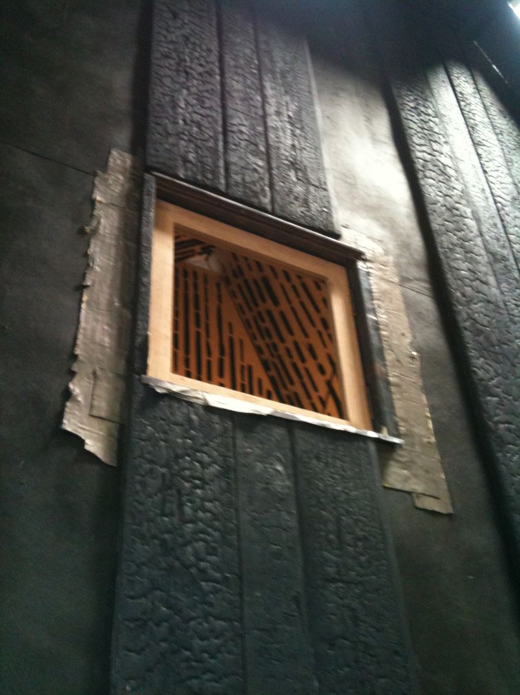
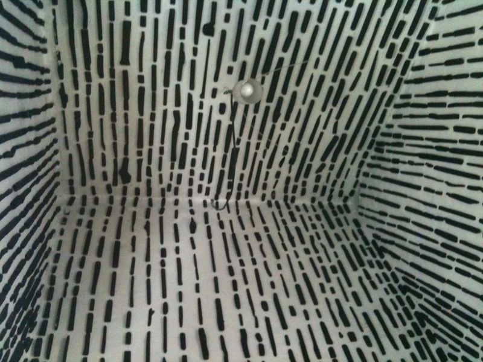
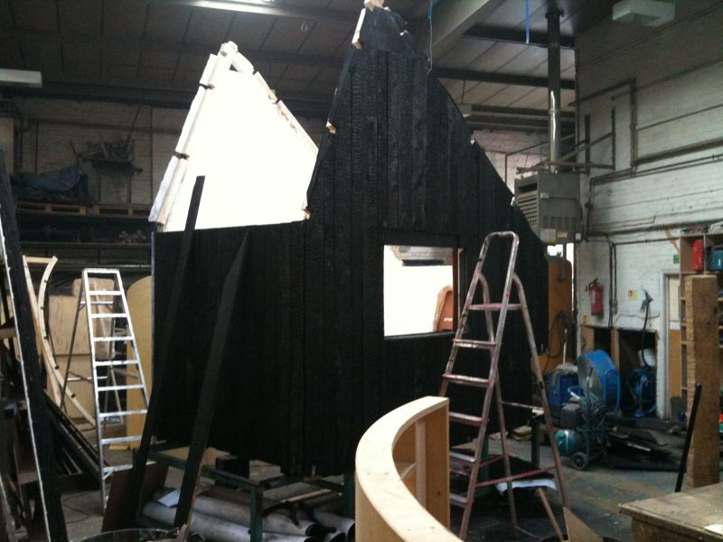

I produced the structural frame of the house and the window joinery from drawings before the arrival of Professor Fujimori and his team. On his arrival we continued construction and to detail amendments. I also had to oversee a number of RCA students who chose to volunteer at the workshop. As this was the first 'live' exhibition at the V&A, there was a great deal of communication with the museum during the installation to install a challenging exhibition safely within in a very delicate space.
 






